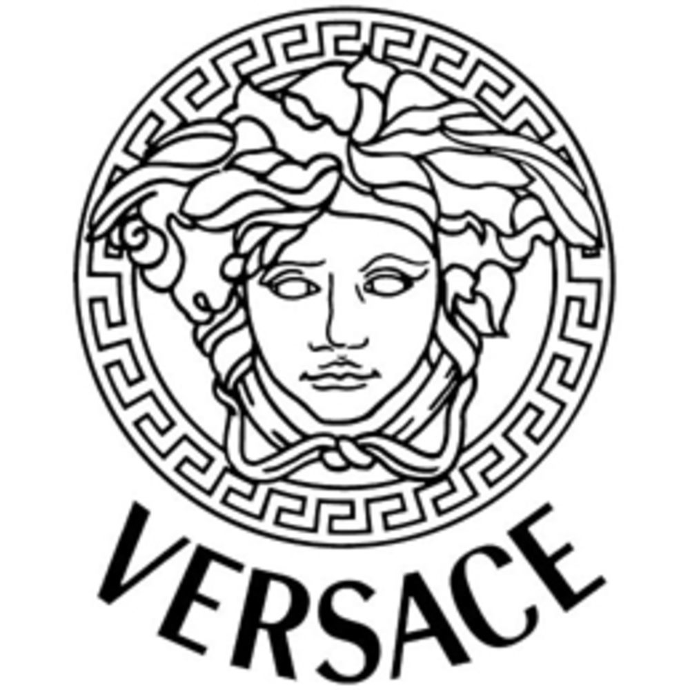
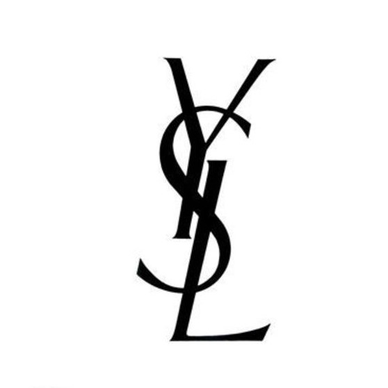

Versace became internationally renowned for ultra-glamorous creations as well as spectacular theatrical costumes and innovative menswear design.

Fashion anarchist and feminist Yves Saint Laurent dressed his muses in tuxedos, trousers, and see-through blouses. He invented the trapeze dress and 'safari' style; he brought turtlenecks and camouflage into vogue. "

Polo was founded in 1976 by Gordon Joffe along with two former Monatic executives, Ronnie Lange and Freddie Barnet, and Stuart Shub from Rex Trueform. His factory L'uomo in Lansdowne produced the first Polo shirts with the trademark square button. The Polo shirt soon became synonymous with the best of quality.